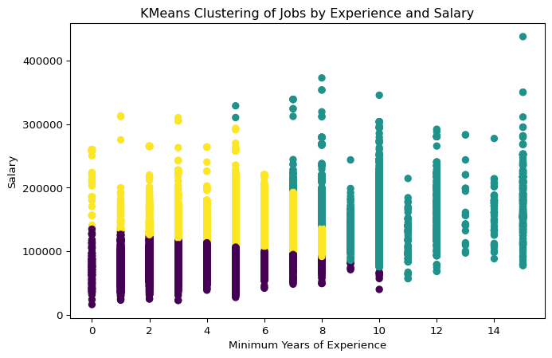
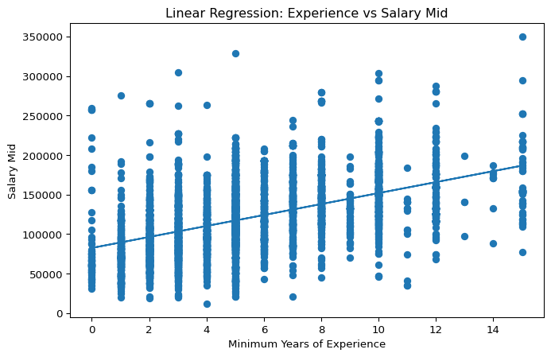

This section applies machine learning methods to analyze patterns in the 2024 job market dataset.
We use one unsupervised learning model and two supervised learning models:
KMeans Clustering to identify segments of job postings
Linear Regression to examine the relationship between experience and salary
Logistic Regression to classify whether a job is remote
The purpose of this section is to understand how experience, salary, and work format are connected, and to provide practical implications for job seekers.
Load Libraries and Data
We first import the necessary libraries and load the cleaned dataset.
The dataset contains a large number of job postings and multiple structured variables. This provides a sufficient basis for applying machine learning methods to study salary patterns, experience requirements, and remote work characteristics.
Descriptive Statistics Before building models, we examine the summary statistics of the key numerical variables used in this section.
The summary statistics show substantial variation in both salary and experience requirements across job postings. This suggests that the market includes jobs at very different levels, which supports the use of clustering and predictive models.
KMeans Clustering We apply KMeans clustering using Salary and Minimum Years of Experience to segment job postings into three groups.
The clustering output groups jobs into three segments based on salary and experience. This means that the job market is not uniform. Instead, it contains different layers of opportunities with different levels of pay and required qualifications.
plt.figure(figsize=(8, 5))plt.scatter( cluster_df["MIN_YEARS_EXPERIENCE"], cluster_df["SALARY"], c=cluster_df["cluster"])plt.xlabel("Minimum Years of Experience")plt.ylabel("Salary")plt.title("KMeans Clustering of Jobs by Experience and Salary")plt.show()

The scatter plot shows three visually distinct salary bands. In general, jobs with lower experience requirements tend to fall into lower salary clusters, while jobs requiring more experience are more likely to appear in higher salary clusters. This suggests a clear segmentation of the labor market into entry-level, mid-level, and higher-paying positions.
For job seekers, this result suggests that career progression is closely tied to experience accumulation. Entry-level roles may offer lower salaries, but they serve as important stepping stones toward better-paying positions.
Linear Regression Next, we use Linear Regression to examine whether minimum years of experience can help explain salary midpoint.
The regression results show a positive coefficient, indicating that jobs requiring more experience tend to have higher salary midpoints. However, the R² value is relatively low, which means that experience alone explains only part of the salary variation. Other factors such as job title, location, industry, and technical skills likely also influence salary.
plt.figure(figsize=(8, 5))plt.scatter(X_test, y_test)plt.plot(X_test, y_pred)plt.xlabel("Minimum Years of Experience")plt.ylabel("Salary Mid")plt.title("Linear Regression: Experience vs Salary Mid")plt.show()

The regression plot shows an overall upward trend, meaning salary midpoint tends to rise as required experience increases. At the same time, the data points are widely scattered around the fitted line, which indicates that salary is influenced by additional variables beyond experience.
This model suggests that experience matters, but experience alone is not enough to guarantee a high salary. Job seekers should not only accumulate experience, but also improve technical skills, target stronger industries, and seek more valuable job titles.
Logistic Regression: Remote Job Classification Finally, we build a Logistic Regression model to classify whether a job is remote based on: Minimum Years of Experience Salary Mid
The model achieves an accuracy of about 46.9%, which indicates relatively weak predictive performance. This suggests that salary midpoint and experience requirement alone are not strong enough to accurately predict whether a job is remote. In other words, remote work is likely influenced by other factors such as company policy, occupation type, industry, and organizational work style.
The confusion matrix shows that the model makes a considerable number of misclassifications for both remote and non-remote jobs. This means the distinction between remote and non-remote positions cannot be captured well using only these two numerical features.
The classification report also shows that the model performs unevenly across classes. This further confirms that remote status depends on more complex factors than salary and experience alone.
For job seekers, this finding is important: remote work opportunities are not simply associated with higher pay or more experience. Instead, candidates looking for remote positions should pay closer attention to: industry and job function company culture and remote policy firms known for flexible work arrangements
Overall Findings Across the three models, several key insights emerge: The job market can be segmented into different clusters based on salary and experience. Experience has a positive relationship with salary, but it explains only part of salary differences. Remote work status is difficult to predict using only salary and experience.
Recommendations for Job Seekers Based on the results above, we recommend that job seekers: Build experience gradually and strategically Develop technical and analytical skills in addition to years of experience Consider industry, occupation, and company policy when targeting remote jobs Focus not only on salary, but also on long-term career progression
Conclusion Overall, the machine learning analysis provides useful insights into how the 2024 job market is structured. KMeans clustering shows clear segmentation across job levels, linear regression confirms that experience is positively associated with salary, and logistic regression suggests that remote work depends on more than simple numerical characteristics. These findings help job seekers better understand how to position themselves in the job market and what factors matter most for salary growth and remote opportunities.